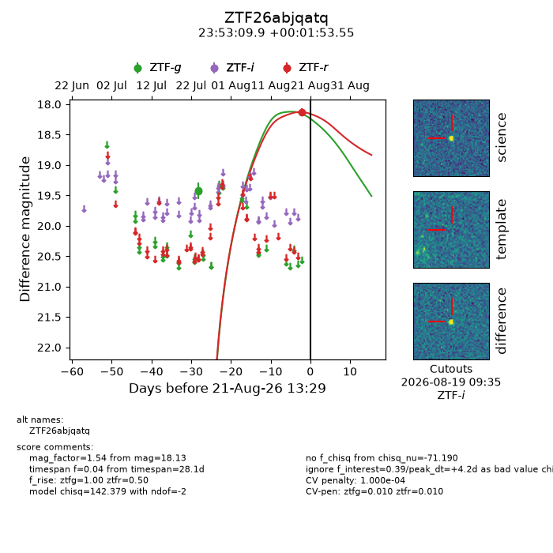
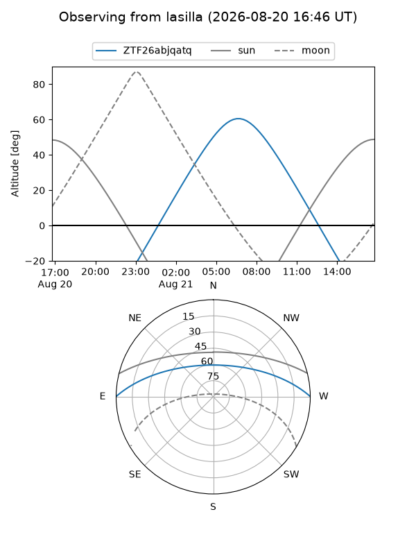
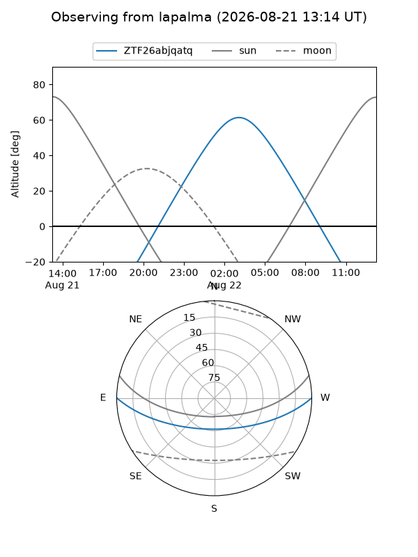
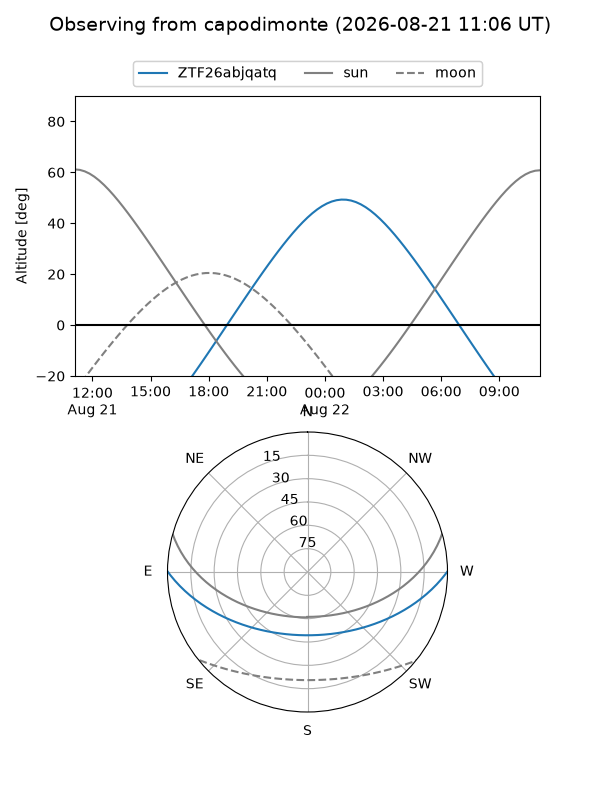
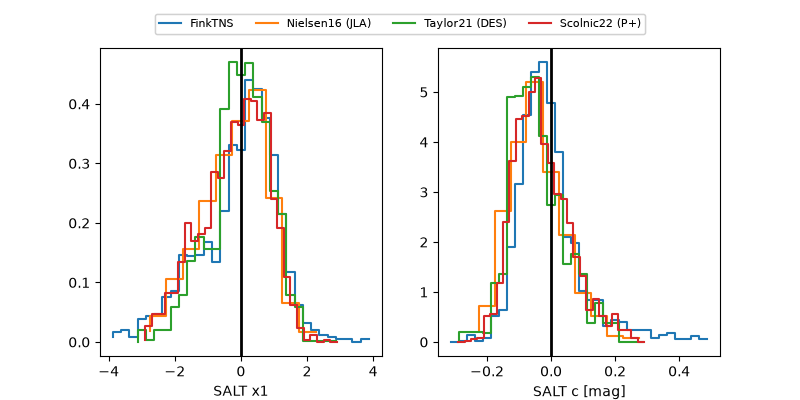

ZTF26abjqatq
Target ZTF26abjqatq at 2026-08-21 13:32
Aliases and brokers:
FINK-ZTF: ztf.fink-portal.org/ZTF26abjqatq
Lasair-ZTF: lasair-ztf.lsst.ac.uk/objects/ZTF26abjqatq
ALeRCE-ZTF: alerce.online/object/ZTF26abjqatq
Direct TNS query: direct search
alt names
ZTF26abjqatq (ztf,fink_ztf)
Coordinates:
equatorial (ra, dec) = 358.2914,+0.03154
equatorial (HMS+DMS) = 23:53:09.94,+00:01:53.55
galactic (l, b) = (93.2785,-59.44294)
Flags:
peak dt: +4.2
likely cv: !!
Photometry:
last ztfg=19.42, ztfr=18.13
2 ztfg, 1 ztfr detections
Lightcurve

Visibility



Additional plots
